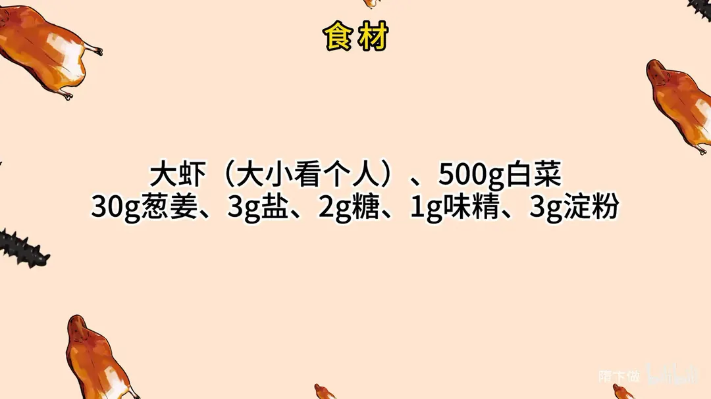
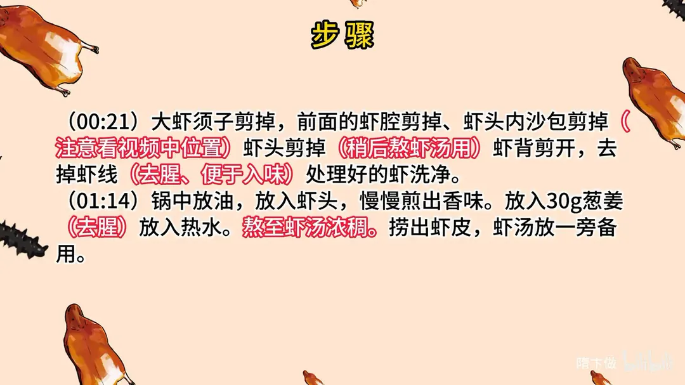
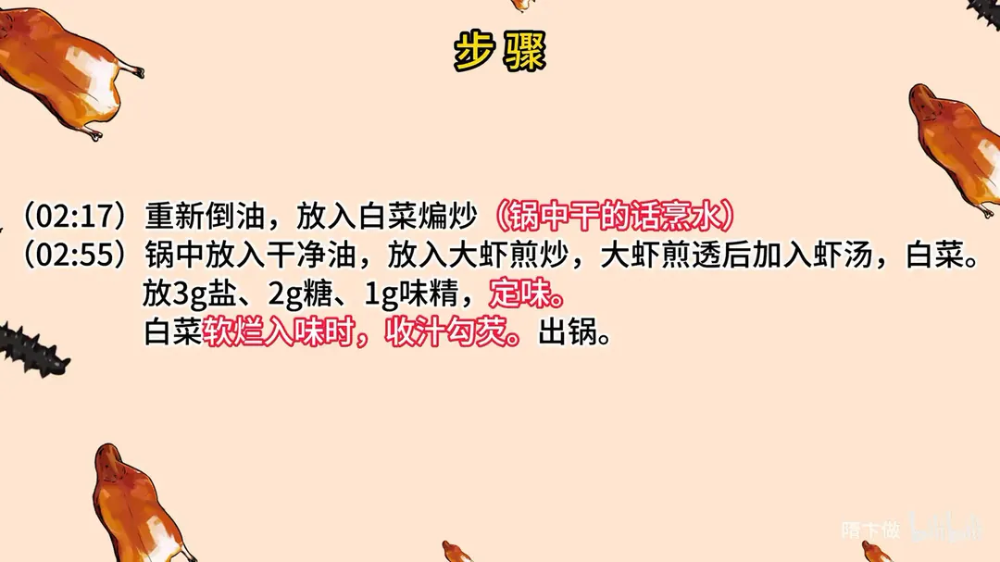

大虾烧白菜
隋卞一做。大虾剪须、去虾腔沙包虾线，虾头单剪下来煎香，加 30g 葱姜和热水熬成浓虾汤。虾汤烧 500g 白菜，3g 盐、2g 糖、1g 味精定味，白菜软烂入味后收汁勾芡。
原视频：https://www.bilibili.com/video/BV1pb4y1u7y4
食材
大虾、白菜、葱姜 等 7 样
| 类别 | 用料 | 用量 |
|---|---|---|
| 主料 | 大虾 | 大小看个人 |
| 主料 | 白菜 | 500g |
| 配料 | 葱姜 | 30g |
| 调料 | 盐 | 3g |
| 调料 | 糖 | 2g |
| 调料 | 味精 | 1g |
| 调料 | 淀粉 | 3g |
步骤
- 处理大虾：大虾须子剪掉，前面的虾腔剪掉、虾头内沙包剪掉，虾头剪掉稍后熬虾汤用；虾背剪开，去掉虾线，去腥、便于入味；处理好的虾洗净。
- 熬虾汤：锅中放油，放入虾头，慢慢煎出香味；放入 30g 葱姜去腥，放入热水，熬至虾汤浓稠；捞出虾皮，虾汤放一旁备用。
- 煸白菜：重新倒油，放入白菜煸炒，锅中干的话烹水。
- 煎虾烧制：锅中放入干净油，放入大虾煎炒，大虾煎透后加入虾汤、白菜；放 3g 盐、2g 糖、1g 味精定味；白菜软烂入味时，收汁勾芡，出锅。
讲解要点
难度：★★☆☆☆（难在把虾头煎透熬出浓汤，以及白菜绝不能焯水）
为什么这么做
- 剪虾枪、去掉沙包，虾背开刀去虾线：虾枪扎嘴，沙包和虾线不去会牙碜，开背也让虾更好入味。
- 虾头单剪下来、中火慢煎并按压：虾的鲜味和虾油都在头里，火一大就焦、苦味全进汤；按一按把虾脑虾油压出来，鲜味才融进油里。
- 加开水（有高汤更好），熬浓后捞净虾皮：热水让油和水乳化成浓汤，冷水一激汤色发灰；虾头久煮发苦，渣子留在汤里影响口感。
- 白菜先干煸出水汽、不焯水：焯水会把白菜的甜和水分一起带走，之后吸不进汤；干煸掉水汽，白菜才装得下虾汤，汁也才浓。
- 选晒过的白菜：水分少、回甜，烧出来不寡淡。
- 糖是用来中和盐和鲜的：不是为了甜，是把咸鲜拉圆。
- 最后大火收汁、勾薄芡：让虾汤挂在白菜上，不澥成一锅水。
- 虾背开刀去虾线：既去腥，也让虾更好入味。
容易翻车
- 虾头没煎透，汤不浓也不香。
- 火太大把虾头煎焦，汤发苦。
- 白菜焯过水，吸不进汤，最后出一锅水。
- 虾线没去净，吃着牙碜。
- 收汁不到位，汁澥、挂不住白菜。
原片尾卡



原片文案
AI 字幕校准稿
我对不起你们，很早很早之前就跟你们说过，要给你们做大虾烧白菜，结果一直拖到现在。为啥拖到现在呢？我忘了，我骄傲了吗。来吧，今天大虾烧白菜，这是下血本啊，大虾比我手还大。
我把须子剪掉，前面有虾枪剪掉，留着一个沙包，把那个沙包剪掉，然后把这头剪下来，一会儿这头单用。把背剪开，看有没有虾线，全都是沙子，很实在、很满。你们平常在家其实买什么虾都行，方法是一样的。大虾开背一定要去虾线，一是去腥，二是便于入味。
我把虾洗一下。下面开始做。锅里放干净油，把虾头都放进去，关中火，这会儿就不能大火了，慢慢地煸这个虾头，拿勺子摁一下，一定要让它把虾里面的鲜味、香味全都融在油里面。搁上一点葱姜去腥，一定要把这虾头完全煎透。
看这样可以了，然后加水，煮沸水；好吃的话可以加点高汤，这个虾汤会更香。熬的看这汤，浓了就可以了，然后把虾皮都捞出去。
然后把锅烧热，再加干净油，把白菜倒进去煸炒，白菜特别干的话可以喷点水，煸完放旁边。
加入干净油，把我们大虾煎一下，放葱姜。煎透了之后，把虾汤倒进去，加入煸过的白菜。说是叫大虾炒白菜，其实也得烧一下、靠一下，把虾汤的味道全部浸到白菜里面去。
调个味，盐、味精、白糖——糖是中和这个盐味和鲜味的，我们定个味，靠一下白菜，靠得软烂入味。可以稍微大点火把汁收一下，勾芡，好了出锅。
这个香，虾很好吃，这个白菜比虾还要好吃，白菜把虾味吸得特别特别足，软趴趴的，还有一丝丝白菜本身的甜，真不错。这个小白菜一定要选晒过的白菜，会稍微回甜一点；然后一定要搁锅里煸掉一点水汽，必须得熬点虾汤，白菜才能把虾汤味吸得很香。
我感觉它特别好吃的一点是这个汁特别浓，没有水气，虾汤一下锅就特别浓。白菜做之前一定不能焯水，千万不能焯水。他把虾所有的部分全都用上了，原汤化原食，真不错。